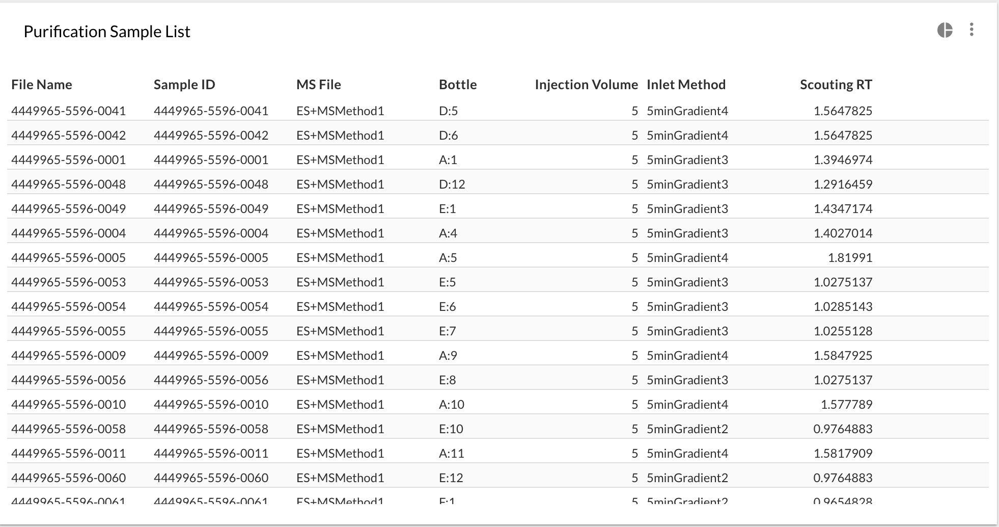

Focused Gradients: generating Sample Lists
So you want to generate your Sample Lists/Sequences from scouting runs on a regular basis? Let's see how you can set up Peaksel to generate those with couple of clicks.
Prerequisites: you've developed methods with zoned Focused Gradients, you've got your scouting results. What's left is to select the right zone for each sample based on the Retention Time of the target peaks.
Sample List table
First you can create a table that resembles the one that you want to upload to your software that controls the instrument. You can name your columns, add calculated columns however you want. So suppose you want something like this for MassLynx:
| File Name | Sample ID | MS File | Bottle | Injection Volume | Inlet Method | Scouting RT |
|---|---|---|---|---|---|---|
| 0000-001-prep1 | 0000-001-prep1 | ES+MSMethod | D:5 | 5.0 | 5minGradient4 | 1.82 |
| 0000-002-prep1 | 0000-002-prep1 | ES+MSMethod | D:6 | 5.0 | 5minGradient1 | 0.35 |
The last column is the most important - it's the method with the zone that we calculated. So what do formulas look like?
Focused Gradients formula
- "File Name" and "Sample ID" are easy - just peak predefined "Injection name" column from
what Peaksel suggest, and then replace the formula with
injection.name + '-prep1' - "Bottle" is one of the predefined columns, aka "Plate Location"
- "MS File" and "Injection Volume" are just static strings, when adding a Calculated
Column just put
'ES+MSMethod'and5.0respectively. - "Scouting RT" - this is the Retention Time of our analyte that we want to purify. From the list of predefined columns select the peak that you want to purify, and rename the column to "Scouting RT" respectively.
- Finally "Inlet Method" uses a boolean expression of form:
expression ? what if true : what if false. In our case it's a series of such blocks:col['Scouting RT'] == '' ? 'N/A' : col['Scouting RT'] < 0.5 ? '5minGradient1' : col['Scouting RT'] < 1.0 ? '5minGradient2' : col['Scouting RT'] < 1.5 ? '5minGradient3' : '5minGradient4'
Filtering out samples w/o peaks
If there are samples that don't really have the analyte, you'll see a bunch of 'N/A'. You can filter out by going to the table menu, choosing "Filter menu" and specifying the filtering formula.
The formula is simple - we want only those rows with non-empty "Scouting RT" to stay, so it's just col['Scouting RT']
Creating a template
Now this Batch that you configured can be used as a template. Just go to another batch, select
Visualize -> Import visualizations and find the template batch.
Note however, that if the substance was named differently than what you had in the Template Batch, you'll have to delete the column "Scouting RT" and creating again - but this time from the substance that's actually present.
Here's the final result that you should get:
